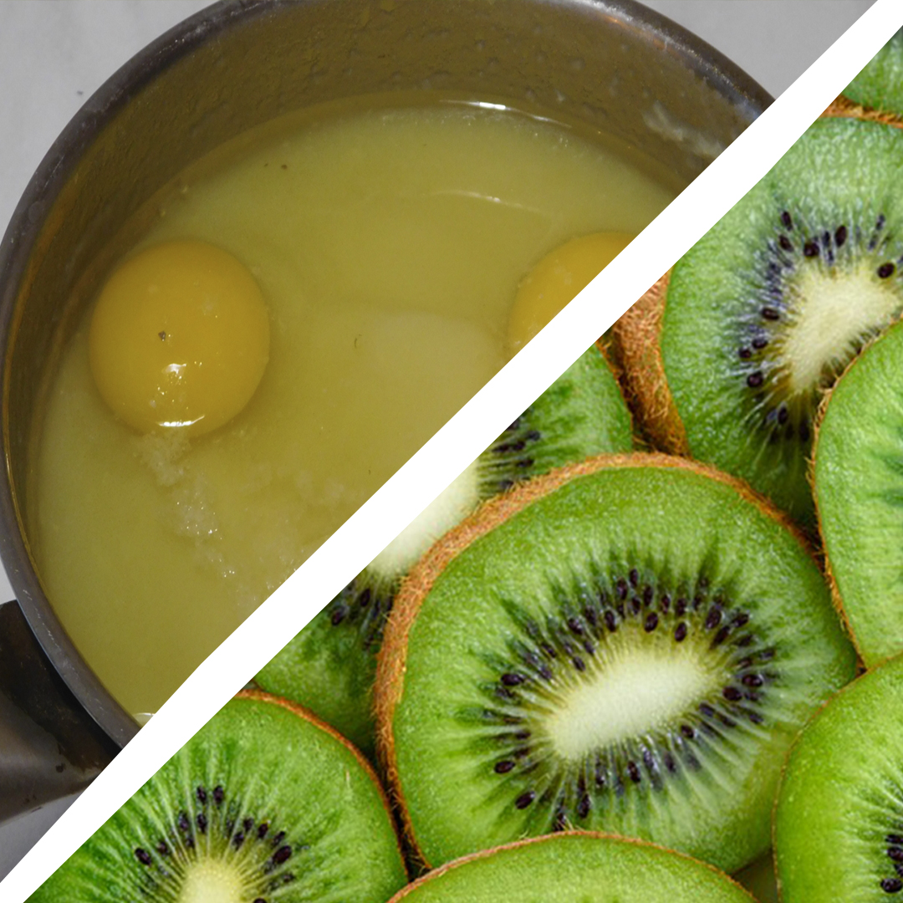

MÁR NAPOKON BELÜL LÁTHATATÓ EREDMÉNYEKET ÉRHETÜNK EL!
Amit mindenki tud, így egy kivi nem nagy, tojás alakú szőrös gyümölcs. Azt már kevesebben, hogy kb. 60 kiviféle létezik a világon. Ez az egyetlen olyan legelterjedtebb, ha egy veszélyeztetett ismert kínai egres, közismertebb nevén a szőrös kivi. Az elnevezés alapján már sejthető, hogy Kínában őshonos gyümölcsről van szó. A világ más országaiban a XX. századtól kezdve a terjednének és ezének a folyamatának a mai napig tart. Valójában bárhol termeszthető lenne, ahol a szőlő megél, ennek ellenétre gyakran okoz fejtörést a kivikertről álmodozó gazdáknak. A problémát legtöbbször az okozza, hogy kétlaki növényről van szó, ami azt jelenti, hogy létezik lánykivi és fiúkivi is, azaz külön töveken fejlődik a porzós és a termő virágok. Tehát kis kivikre csak akkor számíthatunk, ha erre odafigyelve a termő növények közé ültetünk porzós töveket. Amennyiben csak az ízét élvezők táborát erősítjük, jó ha tudjuk, hogy a kivi rendkívül egészséges. Tízszer nagyobb a C vitamint tartalma, mint egy darab almának.
Buy now!